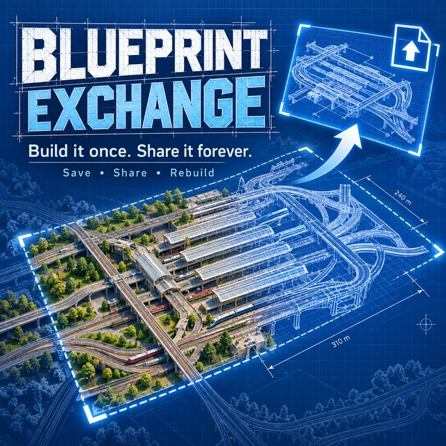

Blueprint Exchange · About
Blueprint Exchange
Build it once. Share it forever.
Blueprint Exchange lets you capture layouts you build in Transport Fever 2, save them as portable blueprints, reuse them in other saves, and share them with other players.
No coding.
No Lua knowledge.
No Blender.
No modding experience required.
If you can build it in Transport Fever 2, you can share it.
That means every player can contribute to the modding community.

Built a clever cargo terminal? Share it.
Made a clean station throat? Share it.
Designed a compact depot, junction, interchange or road layout? Share it.
This may be the easiest way to “mod” Transport Fever 2 ever. 😄
What Blueprint Exchange does
Capture an area of your map using the capture circles, save it as a blueprint, test-place it, rotate it and confirm it.
Your blueprint can then be reused in another save or uploaded to the community library for other players to download.
Blueprints can contain things such as:
- track layouts
- roads
- stations and constructions
- signals
- junctions
- depots
- complex combinations of the above
Anything you want included must be covered by your capture circles.
Share your own blueprints
You can browse other players’ layouts or upload your own in the community library.
Uploading is deliberately simple:
- Capture your layout in Blueprint Exchange.
- Upload the blueprint file on the website.
- Paste or choose a screenshot if you want a preview image.
- Add a name and description.
- Upload it.
That’s it.
The website even crops and prepares the preview image in your browser.
You do not need to make a traditional Transport Fever 2 mod just to share a useful design anymore. New to capturing? The step-by-step guide walks through it with pictures.
Download several at once
Blueprint Exchange supports batch importing.
Download several community blueprints, move the import files into your Transport Fever 2 folder, then press Import downloads in game.
The mod checks the known import slots and brings the blueprints into your library in one go. Prefer to skip the file moving? Make your own one-click importer.
Designed to be safe to experiment with
Blueprint Exchange includes a test-and-confirm workflow.
After capturing a design, place a test copy and inspect it.
If something was missed, remove the test placement, capture again and try again.
Once you’re happy with it, confirm the blueprint and keep it in your library.
There is also an Undo last blueprint placement option for those inevitable “That was not where I meant to put it.” moments. 😄
Mod dependencies
Blueprint Exchange records the constructions and track components used by a blueprint.
If you download a blueprint that depends on another mod you don’t have installed, Blueprint Exchange will tell you what is missing rather than silently failing.
Community-made layouts
This is the part I’m most excited about.
You do not need to know how to write a Transport Fever 2 mod to make something worth sharing.
Some players are brilliant at coding.
Some are brilliant at modelling.
Some are brilliant at building ridiculous railway junctions at 2am.
Now all three can contribute.
A useful layout made by an ordinary player can be downloaded and used by thousands of other players just like a traditional mod.
Your game. Your layout. Your contribution.
Credit
Special thanks to okeating, creator of Copy It!
Blueprint Exchange’s capture and rebuild system follows the approach okeating worked out in Copy It! Reading how that mod captures constructions and track and rebuilds them was the foundation of this one.
Blueprint Exchange takes the idea in a different direction with portable files, sharing across saves and players, dependency checking, and a community blueprint library.
If you haven’t tried Copy It!, do — it’s one of the best TF2 utilities there is.
Public Beta
Blueprint Exchange is new, and Transport Fever 2 players are spectacularly talented at building things I never considered testing. 😂
If you find a layout that doesn’t capture or rebuild correctly, let me know what you built and what happened.
The goal is simple:
Build it once. Share it forever.